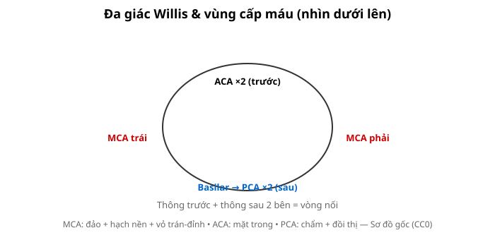
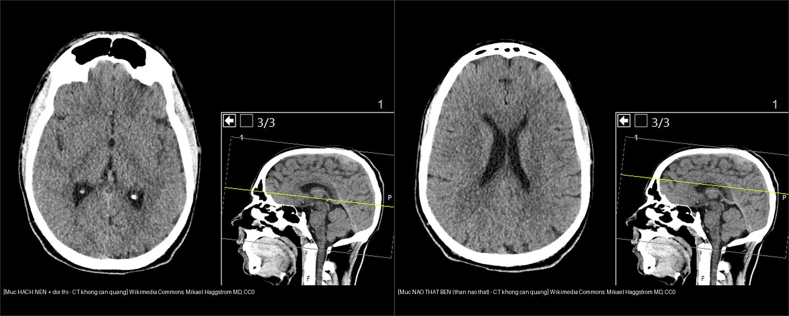

210 — Giải phẫu sọ não cắt lớp: thùy, hạch nền & Willis / Brain anatomy
Tags: pattern:giai-phau-nao vung:so-nao anatomy:nao
Mức chắc chắn (certainty): tổng hợp y văn (literature synthesis) — nhóm tự biên từ y văn mở, chưa gắn ca nguyên văn đơn lẻ.
1. Tổng quan — bản đồ mạch-mô quyết định mọi định khu
- Vỏ não 4 thùy (trán, đỉnh, thái dương, chẩm) + đảo (insula) + hạch nền (nhân đuôi, nhân bèo, đồi thị) + bao trong (chân trước/gối/chân sau) — TẠI SAO bao trong chân sau (posterior limb) quan trọng nhất: bó vỏ-tủy (corticospinal) đi qua diện tích chỉ vài mm, tổn thương nhỏ cũng liệt nửa người.
- Đa giác Willis (thông trước + thông sau 2 bên) nối tuần hoàn trước-sau — TẠI SAO tắc M1 vẫn có người nhẹ: bàng hệ (collaterals) qua Willis + vỏ.

Sơ đồ gốc Thư viện CĐHA, CC0.
CT không cản quang 2 mức (mỗi panel kèm ảnh sagittal định vị mức cắt — đường vàng): trái = mức hạch nền + đồi thị (nhân đuôi, nhân bèo, đồi thị, bao trong ở giữa; chú ý các chấm tăng đậm độ đối xứng hai bên vùng hạch nền — thường là vôi hóa sinh lý, phân biệt với máu bằng tính đối xứng); phải = mức thân não thất bên (thể chai, vách trong suốt, liềm não, rãnh vỏ). Wikimedia Commons: Mikael Häggström, M.D., CC0. Ảnh ghép letterbox, giữ tỉ lệ.2. Gamut định khu theo vùng (Gamut)
- MCA (động mạch não giữa): đảo + hạch nền + vỏ trán-đỉnh bên — thất ngôn (trái) / lơ là (phải) + liệt mặt-tay > chân.
- ACA (động mạch não trước): mặt trong trán-đỉnh — yếu chân > tay + thờ ơ (abulia).
- PCA (động mạch não sau): chẩm + đồi thị + thái dương trong — bán manh + quên (amnesia).
- Hố sau (vertebrobasilar): cầu não (basis + tegmentum), tiểu não, ống tai trong — liệt chéo (crossed), thất điều, điếc-ù một bên (CPA).
3. Bảng vùng-dấu hiệu
| Vùng (location) | Cấu trúc chính | Chốt vào (rule-in) | Chốt loại (rule-out) | Bài nối |
|---|---|---|---|---|
| MCA + hạch nền | Đảo, nhân bèo, bao trong | Thất ngôn/lơ là + liệt mặt-tay; ASPECTS 10 vùng | Yếu chân trội → ACA | 211 |
| Hố sau + CPA | Cầu não, góc cầu-tiểu não | Liệt chéo + thất điều + ù tai/điếc | Liệt cùng bên đơn thuần → trên lều | 217 |
| Não thất + vòm | Thể chai, vách trong suốt | Bướm qua thể chai = GBM; Evans > 0,3 = giãn não thất | Không qua đường giữa → trong trục thường | 213, 218 |
| Màng não + xương | Liềm, lều, khớp sọ | Liềm qua khớp = SDH; thấu kính không qua khớp = EDH | Máu rãnh Sylvius → SAH | 212 |
4. Protocol đọc cắt lớp
- Đọc hệ thống: đối xứng → xám-trắng → hạch nền/bao trong → não thất/rãnh → hố sau (cửa sổ xương khi chấn thương) → mạch (CTA/MRA).
- Đo: ASPECTS 10 vùng, Evans (sừng trán/rộng sọ > 0,3), lệch đường giữa > 5 mm, máu cấp 50–90 HU, DNT 0–15 HU.
flowchart TD
A[CT/MRI sọ] --> B{Trên hay dưới lều?}
B -->|Trên lều| C[Thùy + hạch nền + MCA/ACA]
B -->|Dưới lều| D[Cầu + tiểu não + CPA]
B -->|Não thất| E[Evans + thể chai + DESH]
5. Cạm bẫy
- Thể tích riêng phần (partial volume) rãnh Sylvius giả SAH — HU máu 50–90 vs dịch não tủy 0–15.
- Vôi hóa sinh lý nhân bèo/tuyến tùng giả máu — đối xứng + HU > 100 + phim cũ.
- Hố sau nhiễu xương đá bỏ sót nhồi máu nhỏ — DWI lát mỏng khi chóng mặt + thất điều.
6. Tự lượng giá — Blind Quiz
Ca 1 — Liệt mặt-tay phải + thất ngôn: vùng mạch nào? Vì sao không phải ACA? (Bảng mục 3.)
Bấm để hiện đáp án
- MCA trái: thất ngôn + liệt mặt-tay trội (ACA là yếu chân + thờ ơ).
Ca 2 — Ù tai điếc trái + thất điều + liệt mặt ngoại biên: định khu đâu? (Bảng mục 3.)
Bấm để hiện đáp án
- Góc cầu-tiểu não (CPA) trái: VII/VIII + tiểu não — nghĩ schwannoma dây VIII (bài 217).
Ca 3 — Sừng trán rộng + Evans 0,35 + đi khó tiểu không tự chủ: NPH hay teo não? (Bảng mục 3.)
Bấm để hiện đáp án
- Nghi NPH: Evans > 0,3 + tam chứng (đi-tiểu-trí) — đo góc thể chai + DESH + tap test (bài 218).
Ca 4 — CT không cản quang 2 mức. Ở mức hạch nền có các chấm tăng đậm độ hai bên. Máu hay không?
- Câu hỏi: Gọi tên mức cắt hai panel? Các chấm tăng đậm độ đối xứng vùng hạch nền là gì, và vì sao không nghĩ xuất huyết?
Bấm để hiện đáp án
- Trái = mức hạch nền + đồi thị; phải = mức thân não thất bên (thể chai, vách trong suốt, liềm não).
- Các chấm tăng đậm độ ĐỐI XỨNG hai bên, nằm đúng vị trí nhân bèo = vôi hóa sinh lý (đối chiếu phim cũ nếu nghi). Xuất huyết thường một bên, không đối xứng, kèm phù giảm đậm độ quanh và bệnh cảnh cấp — khác hẳn.
- Ảnh sagittal định vị (đường vàng) giúp tự kiểm tra mức cắt đang đọc.
- Nguồn ảnh: Wikimedia Commons, Mikael Häggström M.D., CC0. Ảnh ghép letterbox.
Bài liên quan chéo
- 200 – Tổng quan Thần kinh
- 201 – Protocol sọ não (cửa sổ đột quỵ)
- 211 – Đột quỵ não (vùng MCA)
Không dùng để chẩn đoán độc lập khi chưa có người hướng dẫn.